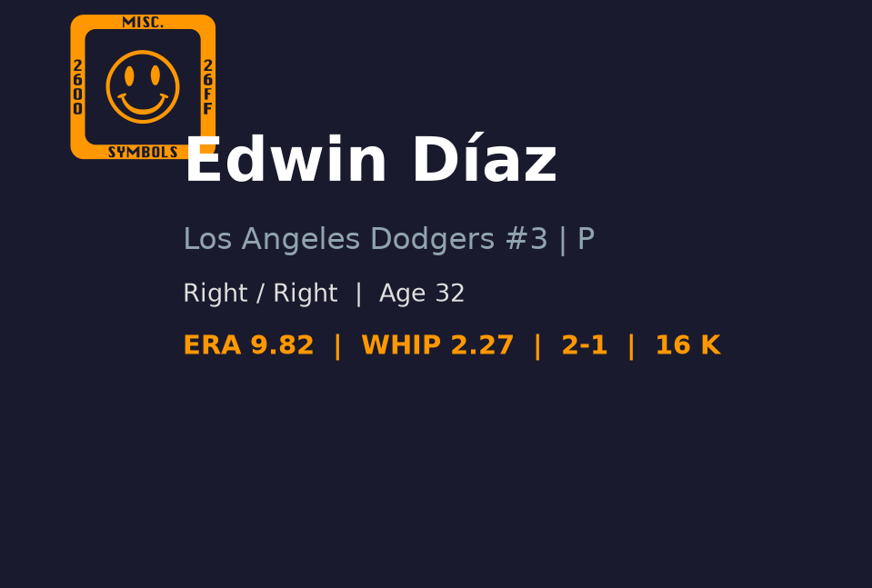
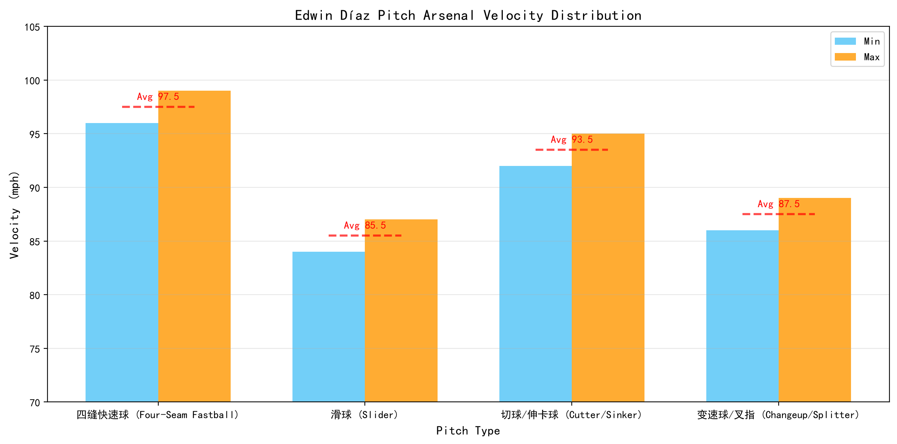

⚾ Edwin Diaz
Los Angeles Dodgers #3 | 后援投手（终结者） | 活跃

基本信息
球探总评
Edwin Diaz 是当今 MLB 最具压制力的终结者之一，职业生涯多次入选全明星，并在 2022 年打出历史级救援赛季（1.31 ERA、118 次三振、32 次救援成功、0.84 WHIP），成为当年最 dominant 的后援投手。他以 elite 级别的四缝线速球和锐利滑球组合闻名，三振能力长期维持在大联盟顶尖水准。2025 年在纽约大都会保持健康，交出 62 场出赛、1.63 ERA、0.87 WHIP、98 次三振的顶级成绩，证明他仍是联盟最可靠的终结者之一。然而 2026 年赛季初因伤病影响长期缺阵，回归后小样本表现挣扎，16 场出赛 ERA 高达 11.85、WHIP 2.56，控球与速球品质均明显下滑。考虑到他的武器库完整度和过往履历，目前的问题更像是伤病恢复期与节奏找回问题，而非能力永久性衰退。若能在赛季末找回 2025 年的状态，他仍将是道奇季后赛牛棚中最具威慑力的第九局人选。
🏆 职业生涯亮点
🌟 2018 - 水手终结者爆发
以 57 次救援成功、1.96 ERA 的赛季震惊联盟，首次入选全明星，奠定顶级 closer 地位。
🌟 2019 - 交易至大都会
被水手交易至纽约大都会，经历调整期后逐步找回状态，成为球队后援核心。
🌟 2022 - 历史级救援赛季
1.31 ERA、118 次三振、32 次救援成功、0.84 WHIP，成为当年联盟最 dominant 的后援投手。
🌟 2023 - WBC 受伤赛季报销
在世界棒球经典赛期间受伤，导致 MLB 赛季报销，职业生涯遭遇重大挫折。
🌟 2025 - 大都会顶级表现
62 场出赛、1.63 ERA、0.87 WHIP、98 次三振，证明仍是联盟最可靠终结者之一。
🌟 2026 - 加盟道奇后的伤病挑战
转战洛杉矶道奇，但赛季初长期养伤，8 月回归后仍在找回 2025 年的 elite 状态。
📊 2026赛季投球数据
📊 赛季对比
投球数据对比
| 赛季 | 球队 | G | GS | W | L | ERA | IP | K | BB | WHIP | SV |
|---|---|---|---|---|---|---|---|---|---|---|---|
| 2021 | New York Mets | 63 | 0 | 5 | 6 | 3.45 | 62.2 | 89 | 23 | 1.05 | 32 |
| 2022 | New York Mets | 61 | 0 | 3 | 1 | 1.31 | 62.0 | 118 | 18 | 0.84 | 32 |
| 2024 | New York Mets | 54 | 0 | 6 | 4 | 3.52 | 53.2 | 84 | 20 | 1.04 | 20 |
| 2025 | New York Mets | 62 | 0 | 6 | 3 | 1.63 | 66.1 | 98 | 21 | 0.87 | 28 |
| 2026 | Los Angeles Dodgers | 16 | 0 | 2 | 2 | 11.85 | 13.2 | 19 | 10 | 2.56 | 7 |
🎯 投球武器库

⚾ 各球种球速区间（蓝=最低球速，橙=最高球速，红线=平均值）。球速差与位移差越大，打者越难锁定单一球路。
🔥 四缝线快速球 (Four-Seam Fastball)
98-102 mph
Diaz 的招牌球种，平均球速接近 100 mph，最高可达 102 mph。转速 elite，上升效应明显，是制造挥空和软弱飞球的核心武器。在健康状态下，速球的 command 和 late life 让他能在第九局对任何打者建立优势。
💫 滑球 (Slider)
86-89 mph
sharp break 的滑球，横向位移大且下坠明显，是对付右打者的主要出局球。与速球形成 10+ mph 速差和明显位移差，破坏力极强。Diaz 常利用两好球后滑球追打右打者手套外侧角落。
⚡ 变速球/指叉 (Changeup / Splitter)
88-91 mph
偶尔使用来打乱左打者节奏，使用频率不高但品质合格。主要作为配球工具，避免打者只准备速球-滑球二元组合。
🔍 球探分析
压制力
Diaz 的压制力建立在速球-滑球组合之上。2025 年 K/9 高达 13.28，三振能力仍是联盟顶尖。但 2026 年 BB/9 飙升至 6.59，控球失稳是 ERA 暴涨的主因。速球被打得更扎实，可能与健康恢复节奏、release point 一致性不足有关。
控球
生涯 BB/9 约 3.0，2026 年小样本明显偏高。保送多集中在满球数和两好球后无法收尾，显示他的 command 尚未回到最佳状态。当他的身体状态和节奏找回后，保送率通常会回落。
心理素质
Diaz 长期担任大场面终结者，心理抗压能力是 elite 级别。2026 年的挣扎更像是伤病恢复期的波动，而非能力衰退。他在逆境中的调整能力是观察重点。
伤病恢复
2026 年赛季初进入伤病名单，导致错过大量常规赛季。回归后球速虽有，但速球品質和控球稳定性不足。9 月前能否回到 2025 年水准，将决定道奇是否放心让他在季后赛关门。
✅ 优势 vs ❌ 劣势
优势 (Strengths)
- 四缝线速球球速与转速均为联盟最顶级，最高可达 102 mph
- 滑球是 signature out pitch，对右打者极具威胁
- 历史级三振能力，健康时 K/9 长期维持 12+
- 大场面心理素质优秀，多次在季后赛关键局登板
- 2025 年仍是顶级救援水准，健康时值得信赖
- 丰富的第九局经验，知道如何在一分差距局面控制节奏
劣势 (Weaknesses)
- 2026 年伤愈回归后小样本表现极差，ERA 与 WHIP 均处于生涯最差区间
- 近期保送率飙升，控球状态尚未恢复
- 年龄 32 岁，伤病恢复后的续航与稳定性需观察
- 配球以速球-滑球为主，若两球状态都不好时缺乏可靠第三球
- 伤病史让道奇必须谨慎管理他的出赛频率
📊 综合评分

总体潜力评分
顶级终结者（需恢复状态）
A- 级
🔮 未来展望
短期关键是恢复健康与节奏。若能在 9 月前找回 2025 年的控球与速球威力，他仍是道奇季后赛最可靠的第九局人选。长期而言，32 岁的年龄和伤病史会让他逐渐从全年顶级下滑，但 1-2 年内仍有 elite closer 的实力。若 2026 年无法反弹，道奇可能需要在休赛季重新评估牛棚布局，甚至考虑寻找更年轻的终结者接班人。Diaz 的合同和履历让他有足够时间证明自己，但球队对他的耐心取决于季后赛前的表现。
📖 背景故事
Edwin Orlando Diaz 出生于波多黎各 Naguabo，2012 年选秀第 12 轮被明尼苏达双城选中，随后被交易至西雅图水手。2016 年 6 月 6 日，他在水手队完成大联盟首秀。2018 年，Diaz 以 57 次救援成功、1.96 ERA 的赛季震惊联盟，成为水手终结者并首次入选全明星。2019 年他被交易至纽约大都会，经历了一段调整期。2022 年 Diaz 达到生涯巅峰，以 1.31 ERA、118 次三振、32 次救援成功、0.84 WHIP 的成绩成为联盟最 dominant 的后援投手。2023 年他在世界棒球经典赛期间受伤导致 MLB 赛季报销。2025 年在大都会保持健康并延续顶级表现。2026 年加盟洛杉矶道奇，但因伤病影响赛季初长期缺阵，目前正在恢复中。